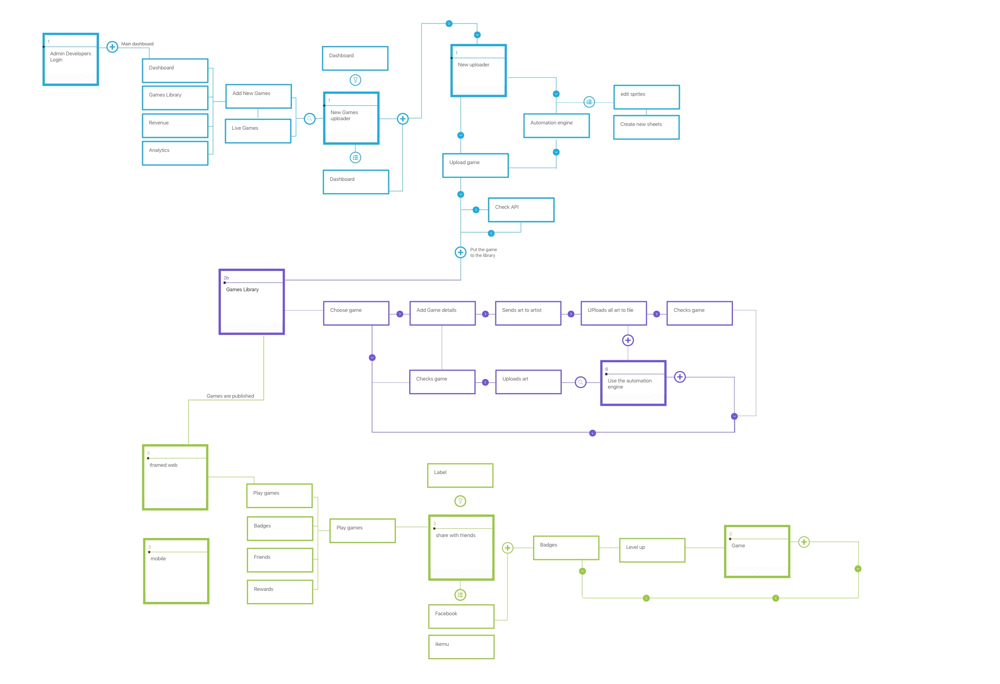

From Zero to
Global: Founding
Ikemu Games
Stop building one-off branded games for advertisers. Build a marketplace connecting brands with developers who already had HTML5 games, then take it to Japan instead of staying in New Zealand's smaller market.
With limited funding, delivery went to outside partners chosen by tender across India, the Philippines, Russia and Jordan. I also had to build a local operation in Japan and change how I briefed teams.
On the KFC Japan campaign alone: 854,454 plays, 1.1M Twitter reach, and 106% of the annual store sales target. The company was later sold and rebranded as Gamify.
Chapter 01
Background and Context
Origin story
In 2010, I moved to New Zealand in search of new opportunities. While brainstorming with two friends, an idea took shape: what if you could play a branded game — say, for KFC — win, and have a prize sent straight to your door? That simple question became the seed for what would eventually grow into iKEMU.
We decided to put the idea to the test in New Zealand. Between the three of us we had complementary backgrounds — mine in gaming, theirs in business and advertising — giving us the range of skills needed to actually build something from it.
We started by approaching clients directly and building one-off branded games for them. Over time, the model evolved: rather than building every game ourselves, we built a platform connecting advertisers who wanted branded games with developers who were already building games and looking to monetise them.
Over the seven years I spent at iKEMU, we ran large-scale campaigns across Japan and New Zealand for clients including Pita Pit and KFC. The company was eventually sold and later rebranded as Gamify.
Chapter 02
Ads were ignored.
Games were not.
The founding insight
Brands wanted meaningful engagement — not impressions, not scroll-past banners. At the same time, game developers were building HTML5 games with no straightforward path to monetisation or brand partnerships.
iKEMU was founded on a single insight: a person's ability to memorise is 10× higher when playing a game than when watching an ad. If you build the marketplace between developers and brands, both problems disappear.
Imagine playing a game, then suddenly in the moment you hit the last flying shrimp — you win a fish that gets sent to your home.

Chapter 03
Building Delivery Capacity With Limited Funding
Hiring, partners, and fundraising
Alongside product direction, I was responsible for hiring and finding external companies that could help us build. With limited funding, we needed delivery capacity that matched our ambitions and release expectations.
I issued tenders to companies in India, the Philippines, Russia, and Jordan. I defined the guidelines and selection criteria, assessing whether each partner's proposed approach could meet our timeline and quality expectations. This made supplier selection part of the product strategy: our delivery commitments depended on the capabilities we brought into the business.
I also contributed to our fundraising efforts while leading product and delivery. My founder responsibilities extended from deciding what we should build to assembling the people and partnerships needed to deliver it.
Product decisions, hiring, supplier selection, and funding were closely connected.
Chapter 04
Three sides of a marketplace
Platform model
iKEMU served three distinct user types simultaneously: game developers who built and uploaded HTML5 games, brands who sponsored and customised those games for campaigns, and end users who played on brand microsites and mobile. Designing for all three required a platform that could flex without fracturing.
Chapter 05
Visualising user behaviour before building
Research & storyboarding
Before any wireframe was drawn, the team mapped the full journey for each user type through storyboards. The developer flow covered game submission, the DAP (Developer Approval Process), art reskinning via the asset library, and publication. The brand flow covered campaign creation, game selection, art upload, preview, and go-live.

Developer flow: from HTML5 game development through QA approval to the iKEMU games library
.png)
Brand flow: campaign setup, game selection, art reskinning, and iKEMU review

Brand flow storyboard — extended detail
Chapter 06
Mapping a multi-sided system
Information architecture
The platform had three distinct product surfaces, each with its own IA: the consumer games platform (main page, game page, profile, rewards, mall), the games library dashboard (browse, search, wishlist, my games), and the brand client dashboard (current campaigns, game history, client information).
.png)
Consumer platform IA — main page through rewards and the mall
.png)
Games library dashboard — browse, search, and game detail flows
.png)
Brand client board IA — active campaigns, engagement history, and account management
Chapter 07
A system that kept people playing
Gamification & engagement design
Retention required more than good games. The team designed a full XP and levelling system, a badge taxonomy across seven categories, a friends and challenge mechanic, and an onboarding flow that introduced each mechanic progressively. Every parameter — coins per session, time to level, badge unlock conditions — was modelled before being built.
.png)
Full gamification system: XP curve, coin economy, badge types, and onboarding flow
Chapter 08
From storyboard to screen
Platform wireframes
Wireframes were produced across all three platform surfaces. The developer dashboard covered game overview, analytics, community review, and published history. The games library covered browse, search, and reskin flows. The brand client dashboard covered campaign management, engagement reporting, and reward configuration.
.png)
Round 1 wireframes — developer dashboard (left), games library (centre), brand client board (right)
.png)
Admin panel and campaign management wireframes — round 2
Chapter 09
From concept to polished product
Mobile app
The consumer-facing mobile app went through multiple rounds of design. The initial concept established the navigation model and visual language. Round 1 wireframes refined the game listing, brands page, and search flows. The final design introduced a bold colour system, a badges screen, a game detail page, and a public player profile.
.png)
Initial design (top) and round 1 wireframes (bottom)
.png)
Final UI — games list, game detail, badges, and public profile screens
Chapter 10
Establishing the Business in Japan
Expanding beyond New Zealand
One of our most consequential decisions was whether to expand into Japan or continue growing within New Zealand's smaller market. We saw an opportunity in Japan's established gaming industry, digital infrastructure, and appetite for games. Pursuing it required building a local operation and learning how to work effectively with Japanese customers and colleagues.
As a co-founder, I helped establish the company in Japan and led its product and design direction. I hired UX designers who understood the local market and could bring that knowledge into the experience.
I also changed how I worked with the team. We needed more precise direction and detailed briefs, with requirements and edge cases worked through explicitly. I adapted our briefing and planning to support that level of preparation.
Customer meetings remained part of my role. Understanding requirements directly helped me connect commercial expectations to what our designers and delivery partners needed to build. Our work in Japan included campaigns for KFC and Kao.
Entering a new market asks a company to develop new capabilities. The leader has to change alongside it.
Chapter 11
854,454 plays. One month's stock sold out in two weeks.
Campaign in action — KFC Japan
KFC Japan used iKEMU to build awareness for a new shrimp product. The brief called for a game that matched the campaign narrative — shrimp staging a takeover of the chicken-dominated KFC world. The team customised an existing game into an edo-period battle scene, reskinned it to the brand's aesthetic, and launched it on the campaign microsite.
.png)
KFC Japan campaign microsite — full branded experience

The KFC Japan branded game across the mobile play experience

Campaign results — 854k plays, 1.1m Twitter reach, 106% of annual store sales target
Chapter 12
Recognition along the way
Achievements
Asia-Fab by Orange
Selected to be part of an accelerator program in Asia, supported by Orange.
Microsoft Innovation
Selected as a finalist in the Microsoft Innovation competition in Tokyo, 2017.
Collaborationidd Japan
idd Japan collaboration to create Game Spark.
NewsIdealog
Covered by Idealog in New Zealand.
SLUSH Japan
Pitching at SLUSH, the biggest startup event in Japan.
LID Japan news
Covered by LID Japan news.
game plays on the KFC Japan campaign alone
total Twitter reach in a single campaign
of KFC annual store sales target reached
people built and scaled the platform over 7 years